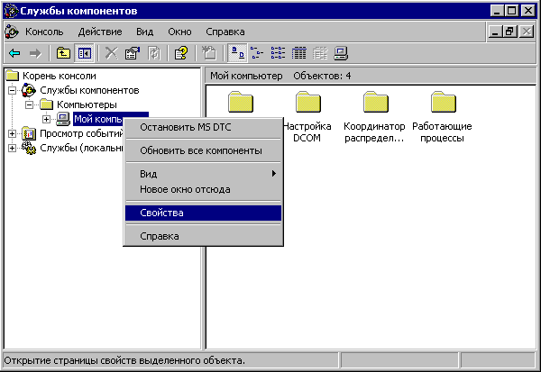
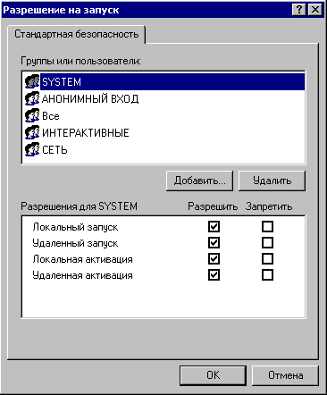
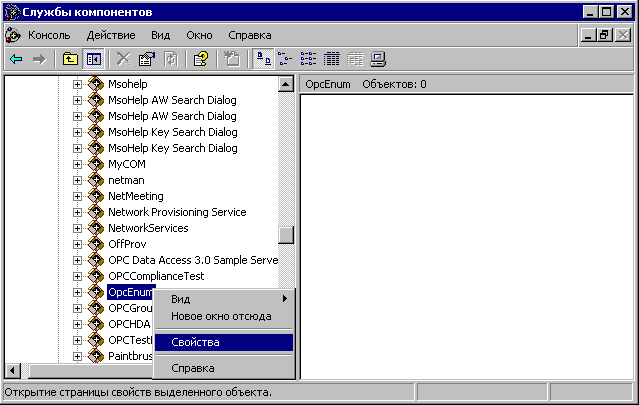
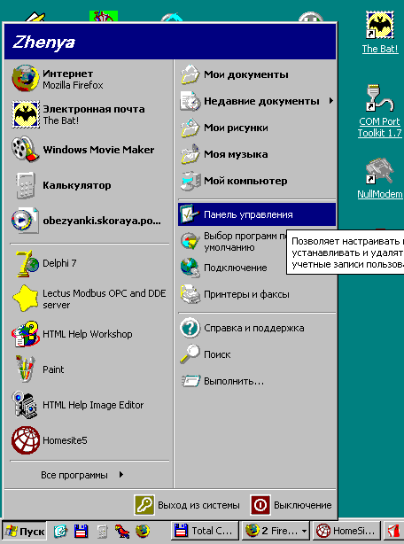
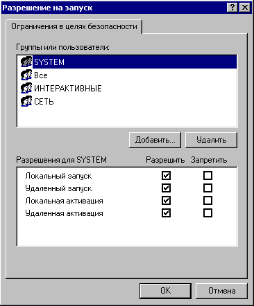
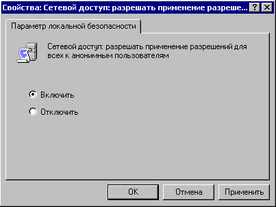
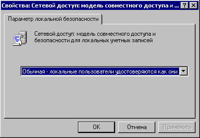

Настройка DCOM для Windows XP SP2, Windows 2003 SP1
Внимание! В ОС Windows XP / 2003 может быть включен "Брандмауэр Windows" ("Windows Firewall").
Для работы по DCOM его необходимо выключить или настроить для работы с соответствующим сервером оборудования.
Описание настройки брандмауэра выходит за рамки данной документации.
- Из меню "Пуск" ("Start") выбрать "Выполнить" ("Run").
- Ввести "dcomcnfg" и нажать "OK".
- Выбрать "Корень консоли"\"Службы компонентов\Компьютеры\Мой компьютер\Настройка DCOM"
("Consol Root"\"Component Services\Computers\My Computer\DCOM config"),
нажать правую кнопку мыши и выбрать "Свойства" ("Properties") так как показано на рисунке:

- Выбрать закладку "Свойства по умолчанию" ("Default Properties") и установить параметры,
указанные на рисунке:
- Выбрать закладку "Безопасность COM" ("COM Security"). В группе "Права доступа" ("Access Permissions")
нажать кнопку "Изменить ограничения" ("Edit Limits"):
- Разрешить "Локальный доступ" ("Local Access"), "Удаленный доступ" ("Remote Access") для пользователей:
"Анонимный вход" ("Anonymous Logon"), "Все" ("Everyone"), "Интерактивные" ("Interactive"), "Сеть" ("Network") и "System":
- В группе "Права доступа" ("Access Permissions") нажать кнопку "Изменить настройки по умолчанию" ("Edit Default"):
- Разрешить "Локальный доступ" ("Local Access"), "Удаленный доступ" ("Remote Access") для пользователей:
"Анонимный вход" ("Anonymous Logon"), "Все" ("Everyone"), "Интерактивные" ("Interactive"), "Сеть" ("Network") и "System":
- В группе "Разрешение на запуск и активацию" ("Launch and Activation Permissions") нажать кнопку
"Изменить ограничения" ("Edit Limits"):
- Разрешить "Локальный запуск" ("Local Launch"), "Удаленный запуск" ("Remote Launch"), "Локальная активация" ("Local
Activation"), "Удаленная активация" ("Remote Activation") для пользователей:
"Анонимный вход" ("Anonymous Logon"), "Все" ("Everyone"), "Интерактивные" ("Interactive"), "Сеть" ("Network") и "System":
- В группе "Разрешение на запуск и активацию" ("Launch and Activation Permissions") нажать кнопку
"Изменить настройки по умолчанию" ("Edit Default"):
- Разрешить "Локальный запуск" ("Local Launch"), "Удаленный запуск" ("Remote Launch"), "Локальная активация" ("Local
Activation"), "Удаленная активация" ("Remote Activation") для пользователей:
"Анонимный вход" ("Anonymous Logon"), "Все" ("Everyone"), "Интерактивные" ("Interactive"), "Сеть" ("Network") и "System":

- На дереве "Корень консоли" ("Consol Root") выделить OPC сервер
"Службы компонентов\Компьютеры\Мой компьютер\Настройка DCOM\Lectus Modbus OPC/DDE server"
("Component Services\Computers\My Computer\DCOM config\Lectus Modbus OPC/DDE server"), нажать правую кнопку мыши
и выбрать "Свойства" ("Properties") так как показано на рисунке:
- Выбрать закладку "Общие" ("General") и установить параметры, указанные на рисунке:
- Перейти на закладку "Безопасность" ("Security"). В группе "Разрешения на запуск и активацию"
("Launch and Activation Permissions") нажать кнопку "Изменить" ("Edit").
- Разрешить "Локальный запуск" ("Local Launch"), "Удаленный запуск" ("Remote Launch"), "Локальная активация" ("Local
Activation"), "Удаленная активация" ("Remote Activation") для пользователей:
"Все" ("Everyone"), "Интерактивные" ("Interactive"), "Сеть" ("Network") и "System":
- В группе "Права доступа" ("Access Permissions") нажать кнопку "Изменить" ("Edit").
- Разрешить "Локальный доступ" ("Local Access"), "Удаленный доступ" ("Remote Access") для пользователей:
"Все" ("Everyone"), "Интерактивные" ("Interactive"), "Сеть" ("Network") и "System":
- Перейти на закладку "Удостоверение" ("Identity"). Установить запуск сервера от имени "Текущий пользователь"
("The interactive user") или, если он запускается как сервис, "Системная учетная запись" ("The system account").
- На дереве "Корень консоли" ("Consol Root") выделить "OpcEnum"
"Службы компонентов\Компьютеры\Мой компьютер\Настройка DCOM\Lectus Modbus OPC/DDE server"
("Component Services\Computers\My Computer\DCOM config\OpcEnum"), нажать правую кнопку мыши
и выбрать "Свойства" ("Properties") так как показано на рисунке:

- Настроить свойства "OpcEnum" аналогично свойствам OPC сервера.
Настройка предотвращения выполнения данных (Data Execution Prevention)
Предотвращение выполнения данных (DEP) это набор аппаратных и программных технологий, которые выполняют дополнительную
проверку памяти для защиты компьютера от повреждения вирусами и при других угрозах безопасности.
- Из меню "Пуск" ("Start") выбрать "Мой компьютер" ("My computer"), нажать правую кнопку мыши
и выбрать "Свойства" ("Properties") так как показано на рисунке:
- Перейти на закладку "Дополнительно" ("Advanced"). В группе "Быстродействие" ("Performance") нажать кнопку
"Параметры" ("Settings").
- Выбрать закладку "Предотвращение выполнения данных" ("Data Execution Prevention") и установить параметры,
указанные на рисунке:
Настройка локальной политики безопасности (Local Security Policy)
Если компьютер является членом рабочей группы, а не домена, то следующие шаги необходимы для установки
соединения. Имейте в виду, что эти настройки могут снизить безопасность вашей системы - обратитесь к
сетевому администратору, если у вас есть какие-либо проблемы.
- Из меню "Пуск" ("Start") выбрать "Панель управления" ("Control panel").

- Выбрать "Администрирование" ("Administrative Tools").
- Выбрать "Локальная политика безопасности" ("Local Security Policy").
- Выбрать "Параметры безопасности"\"Локальные политики"\"Параметры безопасности"
("Security Settings"\"Local Policies"\"Security Options"). Нажать правую кнопку мыши на
"DCOM: Ограничения компьютера на доступ в синтаксисе SDDL" ("DCOM: Machine Access Restrictions…")
и выбрать "Свойства" ("Properties")
- Нажать кнопку "Изменить безопасность" ("Edit Security").
- Разрешить "Локальный доступ" ("Local Access"), "Удаленный доступ" ("Remote Access") для пользователей:
"Все" ("Everyone"), "Интерактивные" ("Interactive"), "Сеть" ("Network") и "System":
- Нажать правую кнопку мыши на "DCOM: Ограничения компьютера на запуск в синтаксисе SDDL"
("DCOM: Machine Launch Restrictions…") и выбрать "Свойства" ("Properties")
- Нажать кнопку "Изменить безопасность" ("Edit Security").
- Разрешить "Локальный запуск" ("Local Launch"), "Удаленный запуск" ("Remote Launch"), "Локальная активация" ("Local
Activation"), "Удаленная активация" ("Remote Activation") для пользователей:
"Все" ("Everyone"), "Интерактивные" ("Interactive"), "Сеть" ("Network") и "System":

- Нажать правую кнопку мыши на "Сетевой доступ: разрешить применение разрешений для всех к анонимным пользователям"
("Network access: Let Everyone permissions apply to anonymous users") и выбрать "Свойства" ("Properties")
- Выбрать "Включить" ("Enabled").

- Нажать правую кнопку мыши на "Сетевой доступ: модель совместного доступа и безопасности для локальных учетных записей"
("Network access: Sharing and security model for local accounts") и выбрать "Свойства" ("Properties")
- Выбрать "Обычная - локальные пользователи удостоверяются как они сами"
("Classic – local users authenticate as themselves").

Теперь компьютер настроен для взаимодействия через DCOM.
P.S. DCOM имеет ограничения для подключений при
взаимодействии компьютеров в домене и рабочей группе. Подключения через DCOM
с вышеприведенными настройки могут работать, но, в зависимости от индивидуальных настроек сетей,
может потребоваться настройка дополнительных параметров.